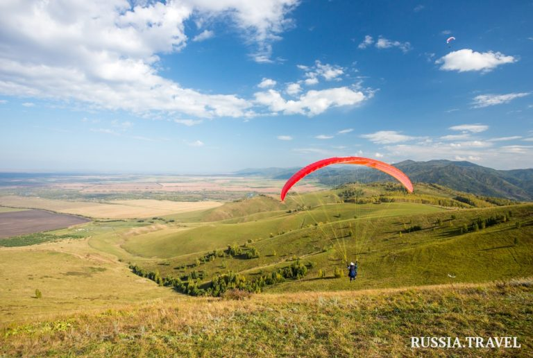
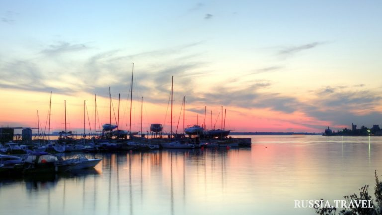

Доступные туры
1. Краснодарский край
Море, солнце, горы, реки и озера — так обычно начинают свой рассказ о Краснодарском крае. После Олимпиады 2014 года для главного курорта России началась новая эра. Сюда стремятся, чтобы пощекотать нервы в Скайпарке AJ Hackett Sochi в 200 метрах над землей. Зимой здесь так же многолюдно, как и летом, ведь в Краснодарский край съезжаются тысячи любителей горнолыжного отдыха. А если одного моря мало, то на полуострове Тамань можно побывать сразу на двух — Черном и Азовском.

2.Алтайский край
В Алтайском крае каждый путешественник найдет занятие по вкусу: для археолога – древние стоянки и пещеры, для гурмана – алтайский сыр и алтайский мёд, для любителя курортного отдыха – озеро Яровое и курорт Белокуриха. Тех, кто ищет единения с природой, ждут уютные турбазы, расположенные в окружении заснеженных гор и вековых сосен, и чистый таежный воздух.
2.Архангельская область
В Архангельской области множество удивительных и особенных мест: полноводные реки и чистейшие озера, чарующие северные леса и суровое Белое море, затерянные в снегах поморские деревни, старинные храмы и величественные монастыри, выдающиеся памятники русского деревянного зодчества с затейливыми резными узорами.
